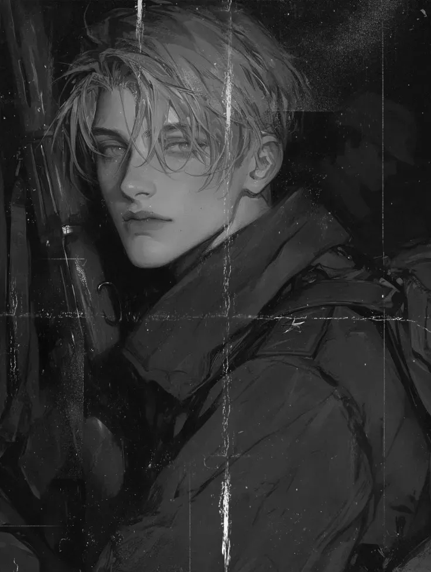

Номер/имя: 0715-2650 "Адлер"
Звание: Унтер-Офицер
Должность: Старший Квартирмейстер | Снайпер | Адъютант Командира КСК
Возраст: 21 год
Место рождения: Мир-Смерти Криг, Подземный Улей Q-19
Текущий статус: АКТИВЕН

Фотопортрет, приложенный к делу
Подпись офицера, утвердившего личное дело:

Дата утверждения: 16.11.103М42
Возраст зачисления в новобранцы: 13 лет
Возраст зачисления в шутце: 15 лет
Место призыва: Гарнизонный призывной пункт №715, Подземный Улей Q-19, Мир-Смерти Криг
Награды и поощрения:
Печать частоты, "Простой Орёл", медаль "За Освобождение Хайленда", "Серебряный Череп".
Взыскания и дисциплинарные меры:
Отсутствуют.
Учетно-послужная хронология:
[1] Дата: 09.05.103М42
Должность / роль: Шутце, Солдат 7-го Корпуса Смерти Крига
Был частью пополнения рядового состава 7-го Корпуса Смерти Крига, прибывшего из Подземного Улья Q-19.
[2] Дата: 12.06.103М42
Должность / роль: Шутце, Квартирмейстер 7-го Корпуса Смерти Крига
Был принят в ряды Квартирмейстеров после экзаминации и официального принятия офицерским составом.
[3] Дата: 01.08.103М42
Должность / роль: Обер-Шутце, Квартирмейстер 7-го Корпуса Смерти Крига
Учавствовал в обороне корабля во время Варп-Перелета, проявив отвагу как боец и врач, был повышен до Обер-Шутце.
[4] Дата: 06.08.103М42
Должность / роль: Обер-Шутце, Квартирмейстер 7-го Корпуса Смерти Крига
Учавствовал в организации обороны во время кампании на планете Кефаль, несмотря на огромные потери, исполнял обязанности Квартирмейстера самостоятельно, путем учета, сбора и экономии ресурсов Похода. Получил Грамоту Сварщика в честь разборки ржавой техники совместно с Фельдфебелем 7026 Крансом и Ефрейтором 4444.
[5] Дата: 22.08.103М42
Должность / роль: Геверхарт, Квартирмейстер 7-го Корпуса Смерти Крига
Совместно с Обер-Шутце 3650, Фельдфебелем 7026 Крансом и Гауптманом 1389 Регель Туркулом проводили оборону временного расположения Похода от атак Орков, после чего была проведена контратака на их базу. Обер-шутце 3650 и Обер-шутце 2650 отличились выдающимися снайперскими умениями. После победы над врагом, 2650 получил звание Геверхарта.
[6] Дата: 23.08.103М42
Должность / роль: Геверхарт, Квартирмейстер 7-го Корпуса Смерти Крига
Учавствовал в организации обороны в виде установки брезентов совместно с Геверхартом 3650 и Гауптманом 1389 Регель Туркулом и установки ворот на территории, имея ограниченные ресурсы и отсутствия снабжения.
Учавствовал в выездах за территорию для поиска ресурсов, разведки.
[7] Дата: 24.08.103М42
Должность / роль: Ефрейтор, Квартирмейстер 7-го Корпуса Смерти Крига
Учавствовал в последней обороне оставшихся сил на Кефали, до прибытия эвакуации. Отличился доблестью и смелостью как Квартирмейстер. Повышен до Ефрейтора.
[8] Дата: 30.08.103М42
Должность / роль: Ефрейтор, Квартирмейстер 7-го Корпуса Смерти Крига
Участие в кампании на Даготе-1. Участие в установке расположения, организации поставок и учета ресурсов Похода.
[9] Дата: 01.09.103М42
Должность / роль: Ефрейтор, Квартирмейстер 7-го Корпуса Смерти Крига
Участие в карательных боевых операциях по подчинению планеты в состав Империума. Участие в атаке на базу еретиков, проявил себя как меткий стрелок с миномёта, совместно с Гауптманом 1389 Регель Туркулом.
[10] Дата: 07.09.103М42
Должность / роль: Гаупт-Ефрейтор, Квартирмейстер 7-го Корпуса Смерти Крига
Участие в последней атаки после событий [Удалено]. Оставшись практически единственным Квартирмейстером, вопреки влиянию [Удалено] остался трезвый умом и выполнял свой долг, несмотря на массовую эвакуацию офицерского состава и иных сил.
Учавствовал в последней атаке на [Удалено], после чего был эвакуирован с прочими выжившими. Привел список утвержденных смертей на планете после [Удалено]. Повышен до Гаупт-Ефрейтора, получил награды: Грамота Штыка, Печать Частоты и Простой Орёл.
[11] Дата: 20.09.103М42
Должность / роль: Гаупт-Ефрейтор, Квартирмейстер 7-го Корпуса Смерти Крига
Был выбран в качестве оперативника для проведения диверсионных и освободительных операций Архимилитантом Айдером Вар Колрэйном (Командующий операциями на столичной планете Хайлед VII в системе Эгио). В ходе операций проявил себя снова как выдающийся снайпер и врач. Получил медаль "За Освобождение Хайленда".
[12] Дата: 02.10.103М42
Должность / роль: Обер-Фельдфебель, Старший Квартирмейстер 7-го Корпуса Смерти Крига
После прибытия состава Похода на территорию Райского мира Иллидриана, Квартирмейстер 2650 был рассмотрен как Адъютант Гауптманом 1389 Регель Туркулом, ввиду событий на [Удалено], Хайленде и Даготе-1 и иных многочисленных нештатных ситуаций, было принято решение повысить Гаупт-Ефрейтора 2650 до звания Старший Квартирмейстер, присвоить ему должность Адъютанта и повысить до Обер-Фельдфебеля.
[13] Дата: 08.10.103М42
Должность / роль: Обер-Фельдфебель, Старший Квартирмейстер 7-го Корпуса Смерти Крига
Учавствовал в подземных операциях по уничтожению жуков, мешающих целостности почвы.
[14] Дата: 10.10.103М42
Должность / роль: Обер-Фельдфебель, Старший Квартирмейстер 7-го Корпуса Смерти Крига
Учавствовал в операциях против ксеносов, обнаруженных внутри планеты Иллидриан.
[15] Дата: 20.10.103М42
Должность / роль: Обер-Фельдфебель, Старший Квартирмейстер 7-го Корпуса Смерти Крига
Учавствовал в подавлении бунтов и диверсий со стороны Харонского полка по отношению к Оффицио Префектус, оказывал медицинскую помощь раненным.
[16] Дата: 25.10.103М42
Должность / роль: Обер-Фельдфебель, Старший Квартирмейстер 7-го Корпуса Смерти Крига
Принял командование и участие в боевых операций на планете Гераль-Примус, возглавив силы 7-го Осадного Корпуса Смерти Крига в первой атаке по приказу Гауптмана 1389 Регель Туркула.
[16] Дата: 27.10.103М42
Должность / роль: Обер-Фельдфебель, Старший Квартирмейстер 7-го Корпуса Смерти Крига
Учавствовал в организации обороны и управлении состава 7-го Корпуса Смерти Крига. На время провения кампании на Гераль-Примусе, целью которой было подчинение планеты и подавление ереси, назначен командующим силами 7-го Корпуса Смерти Крига. Повышен до Унтер-Офицера.
[17] Дата: 03.11.103М42
Должность / роль: Унтер-Офицер, Старший Квартирмейстер 7-го Корпуса Смерти Крига
Учавствовал в марш-броске сил на установку ПКО, возглавляя 7-й Корпуса Смерти Крига. Установил кончину Гауптмана 1389 Регель Туркула, временно став единственным командующим 7-го Корпуса Смерти Крига, закончив успешно штурм совместно с силами Похода.
[18] Дата: 05.11.103М42
Должность / роль: Унтер-Офицер, Старший Квартирмейстер 7-го Корпуса Смерти Крига
Учавстсовал в организации обороны ПКО и расстановки сил. Организовал прощальные ритуалы Гауптману 1389 Регель Туркулу, совместно с Обер-Лейтенантом 1388 Штайнерром.
[19] Дата: 10.11.103М42
Должность / роль: Обер-Фельдфебель, Старший Квартирмейстер 7-го Корпуса Смерти Крига
Завершив эвакуацию с планеты Гераль-Примус, Унтер-Офицер 2650 по приказу штаба Крига получил собственное имя - Адлер, а также награды: "Серебряный Череп".
Общий статус годности:
Рост: 189 см Вес: 79 кг
Слух: Категория "А" Зрение: Категория "А"
Перенесённые ранения и повреждения:
— Множественные пулевые ранения и шрамы.
Обстоятельства: Проведение боевых операций
Лечение: Самостоятельное лечение, Штаб Квартирмейстеров 7-го Осадного Корпуса Смерти Крига.
Импланты и протезы:
— Аугмент высокого качества в районе передней части горла и голосовых связок.
Обстоятельства: Ранение на Кефали со стороны местной фауны.
Лечение: Аугмент установил Магос Биологис Опиум Х.
— Аугмент высокого качества ступни.
Обстоятельства: Подорвался на мине во время разведки на планете Гераль-Примус.
Лечение: Квартирмейстер 8787.
Психическое состояние:
— Относительно стабильное. Подозрение на ПТСР.
Осмотр провёл(а): Старший Квартирмейстер Фельдфебель 8911 Кагори
Дата осмотра: 16.11.103М42
Биография до перевода в 7-й Корпус Смерти Крига:
До включения в состав 7-го Корпуса Смерти Крига Унтер-Офицер 2650 Адлер был уроженцем Подземного Улья Q-19. Адлер Гервер вырос в биологической семье, где отцом был известный фельдшер Отто Гервер, а мать — корректироващик артилерии Анна Гервер. Адлер до 12-ти лет учавствовал в помощи родителям, после чего был отправлен в 12 лет на полевые тренировки и подготовку к вступлению в регулярную армию. Были замечены конфликты со сослуживцами из искуственных родильных точек на фоне происхождения. Частые драки были пресечены.
Адлер отличался от других солдат любознательностью и стремлениям изучать мир и вещи, не касаемые военного дела, что противоречит понятим долга и дисциплины Крига.
К моменту совершеннолетия для поступления в основную армию, в возрасте 15-ти лет, Адлеру Герверу был присвоен номер "0715-2650", и он был направлен на пополнение состава 7-го Корпуса Смерти Крига.
С первого дня солдат проявлял исполнительность и, судя по всему, подавлял собственные девиантные (это не удивительно, солдат вышел из полноценной семьи) мысли.
До призыва известно, что Адлер Гервер увлекался рисованием, молчаливым рассматриванием объектов и живности, что характерно для здорового ребёнка. Однако после поступления на службу, данные "увлечения" не были обнаружены за солдатом 0715-2650, пока тот не получил офицерское звание.
По личным наблюдениям очевидцев, сообщается, что данный Старший Квартирмейстер отличается по темпераменту от коллег-офицеров большей разговорчивостью и невербальностью в общении и подходу. Возможно, из-за своей природной девиации Регель Туркул и выбрал его в столь молодом возрасте на роль Адъютанта и офицера.